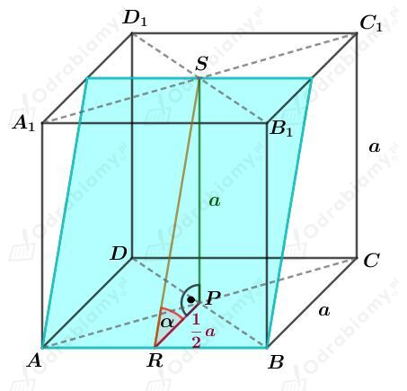

Dany jest graniastosup prawidowy. Szukamy miar kta utworzonego przez dwie ssiednie ciany boczne tego graniastosupa.
Zauwa偶my, 偶e szukany kt jest taki sam, jak kt w wielokcie bdcym podstaw graniastosupa.
| Miara kta wewntrznego n-kta foremnego wynosi: |
a)
Dany jest graniastosup prawidowy tr贸jktny.
Podstaw tego graniastosupa jest tr贸jkt r贸wnoboczny, wic szukany kt ma miar:
b)
Dany jest graniastosup prawidowy picioktny.
Podstawtego graniastosupa jest piciokt foremny, wic szukany kt ma miar:
c)
Dany jest graniastosup prawidowy szecioktny.
Podstaw tego graniastosupa jest szeciokt foremny, wic szukany kt ma miar:
a)
Rysunek:

Korzystajc z twierdzenia Pitagorasa dla tr贸jkta RPS mamy:
Wyznaczmy cosinus kta . Mamy:
b)
Rysunek:
Korzystajc z twierdzenia Pitagorasa dla tr贸jkta RPS mamy:
Wyznaczmy cosinus kta . Mamy: